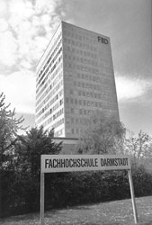

1993 : FH Darmstadt
 Comparison of MERISE and CASE (Computer Aided Software Engineering) system engineering methods for a European coordination of teaching methods in this area. There I discovered the foundations of the model driven approach that is now being used by major actors in the software industry.
Since the work was performed in Germany but had to be presented in France, all the material was produced in both languages. Unfortunately, we underestimated the time it would take to translate the final report :-)
But it the end it was a good experience to mix with foreign students and to aprehend cultural differences.